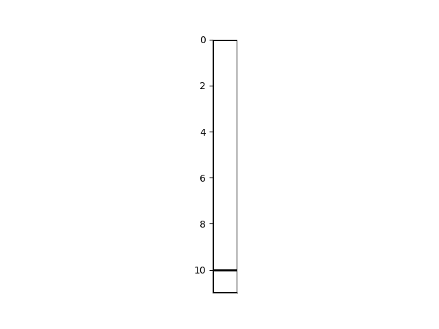
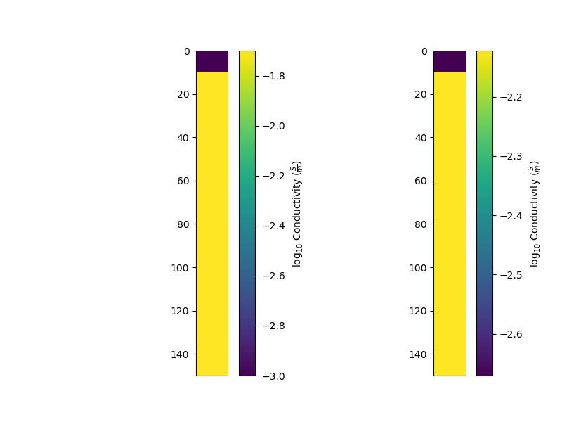

Note
Click here to download the full example code
1D Model with an infinite halfspace
from copy import deepcopy
from geobipy import StatArray
from geobipy import Model1D
from geobipy import Distribution
from geobipy import FdemData
import matplotlib.pyplot as plt
import numpy as np
import h5py
from geobipy import hdfRead
Instantiate the 1D Model with a Half Space
# Make a test model with 10 layers, and increasing parameter values
nLayers = 2
par = StatArray(np.linspace(0.001, 0.02, nLayers),
"Conductivity", "$\\frac{S}{m}$")
thk = StatArray(np.full(nLayers, fill_value=10.0))
thk[-1] = np.inf
mod = Model1D(parameters=par, widths=thk)
# plt.figure()
# mod.plotGrid(transpose=True, flip=True)
Randomness and Model Perturbations
We can set the priors on the 1D model by assigning minimum and maximum layer depths and a maximum number of layers. These are used to create priors on the number of cells in the model, a new depth interface, new parameter values and the vertical gradient of those parameters. The halfSpaceValue is used as a reference value for the parameter prior.
prng = np.random.RandomState(0)
# Set the priors
mod.set_priors(halfSpaceValue=0.01,
min_edge=1.0,
max_edge=150.0,
max_cells=30,
parameterPrior=True,
gradientPrior=True,
prng=prng)
# plt.figure()
# mod.plot(flipY=True)
We can evaluate the prior of the model using depths only
print('Log probability of the Model given its priors: ',
mod.priorProbability(False, False, log=True))
# Or with priors on its parameters, and parameter gradient with depth.
print('Log probability of the Model given its priors: ',
mod.priorProbability(True, True, log=True))
Out:
Log probability of the Model given its priors: -13.358381323561012
Log probability of the Model given its priors: -20.111609194656108
To propose new models, we specify the probabilities of creating, removing, perturbing, and not changing a layer interface
pProposal = Distribution('LogNormal', 0.01, np.log(2.0)**2.0,
linearSpace=True, prng=prng)
mod.setProposals(probabilities=[0.25, 0.25, 0.5, 0.25],
parameterProposal=pProposal, prng=prng)
We can then perturb the layers of the model
remapped, perturbed = mod.perturb()
# ################################################################################
# fig = plt.figure(figsize=(8, 6))
# ax = plt.subplot(121)
# mod.pcolor(transpose=True, flip=True) # , grid=True)
# ax = plt.subplot(122)
# perturbed.pcolor(transpose=True, flip=True) # , grid=True)
We can evaluate the prior of the model using depths only
print('Log probability of the Model given its priors: ',
perturbed.priorProbability(False, False, log=True))
# Or with priors on its parameters, and parameter gradient with depth.
print('Log probability of the Model given its priors: ',
perturbed.priorProbability(True, True, log=True))
Out:
Log probability of the Model given its priors: -13.358381323561012
Log probability of the Model given its priors: -18.64550324345332
Perturbing a model multiple times
In the stochasitic inference process, we perturb the model structure, and parameter values, multiple times. Each time the model is perturbed, we can record its state in a posterior distribution.
For a 1D model, the parameter posterior is a 2D hitmap with depth in one dimension and the parameter value in the other. We also attach a 1D histogram for the number of layers, and a 1D histogram for the locations of interfaces.
Since we have already set the priors on the Model, we can set the posteriors based on bins from from the priors.
mod.setPosteriors()
mod0 = deepcopy(mod)
Now we randomly perturb the model, and update its posteriors.
mod.updatePosteriors()
for i in range(1001):
remapped, perturbed = mod.perturb()
# And update the model posteriors
perturbed.updatePosteriors()
mod = perturbed
# mod.par.posterior._counts[:, :] = np.random.randn(*mod.par.posterior.shape)
We can now plot the posteriors of the model.
Remember in this case, we are simply perturbing the model structure and parameter values The proposal for the parameter values is fixed and centred around a single value.
fig = plt.figure(figsize=(8, 6))
plt.subplot(131)
mod.nCells.posterior.plot()
ax = plt.subplot(132)
mod.par.posterior.pcolor(cmap='gray_r', xscale='log', noColorbar=True, flipY=True)
plt.subplot(133, sharey=ax)
mod.edges.posterior.plot(rotate=True, flipY=True)
fig = plt.figure(figsize=(8, 6))
gs = fig.add_gridspec(nrows=1, ncols=1)
ax = mod.init_posterior_plots(gs[0, 0])
mod.plot_posteriors(axes=ax,
edges_kwargs = {
"rotate":True,
"flipY":True
},
parameter_kwargs = {
"cmap": 'gray_r',
"xscale": 'log',
"noColorbar": True,
"flipY": True,
'credible_interval_kwargs':{
'reciprocate':True
}
},
best = mod)
- 
- 
We can interpolate the Model to another mesh.
mesh = mod.par.posterior
x = mod.piecewise_constant_interpolate(mod.par, mesh, axis=1)
plt.show()
Total running time of the script: ( 0 minutes 2.755 seconds)